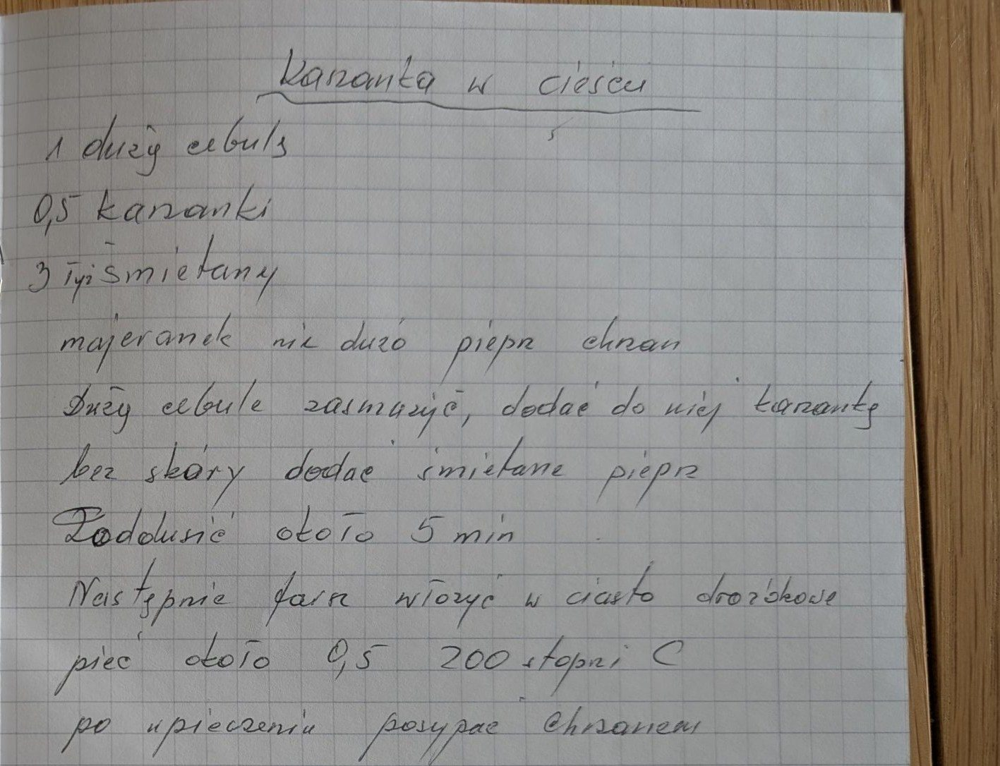

Kaszanka w cieście


Składniki
- 1 duża cebula
- 0,5 kaszanki
- 3 łyżki śmietany
- majeranek (nie dużo)
- pieprz
- chrzan
- ciasto drożdżowe
Przygotowanie
- Dużą cebulę zasmażyć, dodać kaszankę bez skóry.
- Dodać śmietanę, pieprz i majeranek, podusić około 5 minut.
- Farsz włożyć w ciasto drożdżowe.
- Piec około 0,5 (godziny) w 200°C.
- Po upieczeniu posypać chrzanem.
Oryginalny zapis
Kaszanka w cieście 1 dużą cebulę 0,5 kaszanki 3 łyż. śmietany majeranek nie dużo pieprz chrzan Dużą cebulę zasmażyć, dodać do niej kaszankę bez skóry dodać śmietanę pieprz Podusić około 5 min Następnie farsz włożyć w ciasto drożdżowe piec około 0,5 200 stopni C po upieczeniu posypać chrzanem